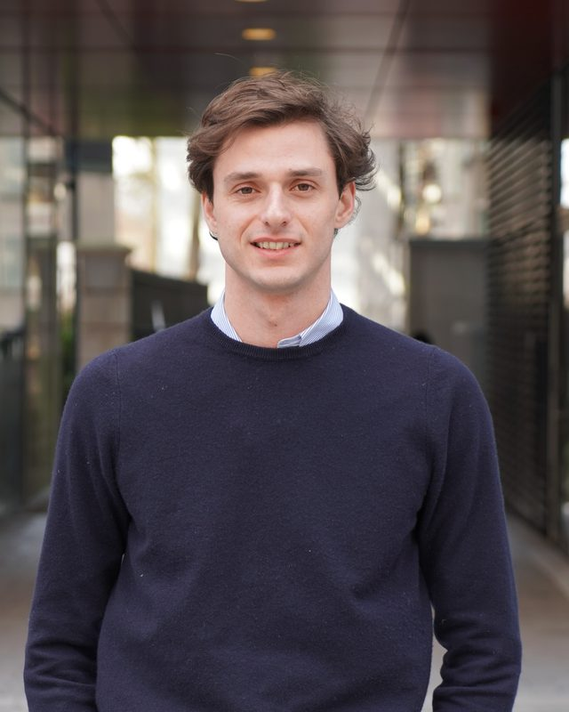
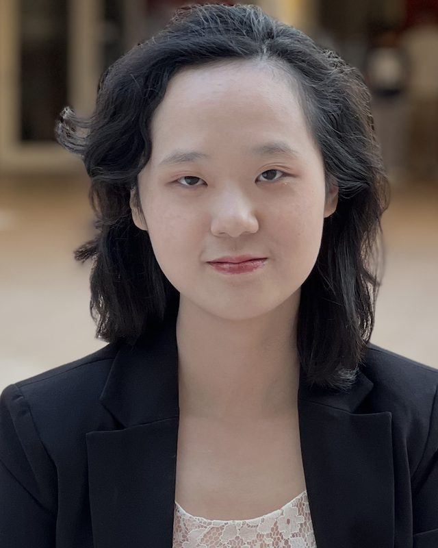

빈칸도 전략이에요
빈칸은 1.5점, 오답은 0점이에요. 문항마다 풀지 말지 정하는 기준을 훈련해서, 찍기로 잃는 점수를 없애요.
AMC 10/12, John Locke Global Essay Prize, Harvard International Review 글쓰기 대회. 각 대회가 어떻게 채점되는지에서 출발해, 학생의 수준과 일정에 맞춘 1:1 계획을 세워요.
학생이 무엇을 내는지, 어떻게 심사하는지, 실제로 점수가 갈리는 지점이 어디인지 정리했어요.
| AMC 10 / 12 | John Locke Global Essay Prize | HIR Academic Writing Contest | |
|---|---|---|---|
| 형식 | 25문항 · 75분객관식, MAA 주관 | 논증 에세이 1편최대 2,000단어 | 저널형 단문 아티클 1편약 800–1,200단어 · 7–12학년 |
| 평가하는 것 | 시간 압박 속 문제 해결력 — 대수, 기하, 정수론, 조합 | 철학 · 정치 · 경제 · 역사 · 심리 · 신학 · 법 분야에서 독창적인 논지를 세우고 방어하는 힘 | 국제 관계 문제를 근거로 분석하고, 분명한 주장으로 마무리하는 힘 |
| 채점 방식 | 정답 +6 · 빈칸 +1.5 · 오답 0만점 150점 | 학계 심사위원이 평가지식 · 논증 · 독창성 · 구조 | 공개된 루브릭으로 채점결선 진출자는 구술 방어에 초대될 수 있어요 |
| 승부처 | 마지막 10문항 — 그리고 언제 비워 둘지 아는 판단 | 가장 강한 반론을 견디는 하나의 날카로운 논지 | 덜 다뤄진 관점, 그리고 의견 대신 근거 |
| 일정 | 11월 초2026년: 11월 5일(A) · 11월 13일(B) | 3월 말까지 등록 · 5월 말까지 제출 | 회차마다 마감이 달라요 — 현재 일정을 확인해 드려요 |
일정과 규정은 주최 측이 정하고 해마다 바뀌어요. 계획을 세우기 전에 최신 규정을 함께 확인해요.
보통 마감 2–3개월 전에 시작해요. 한 해 일정은 대체로 이렇게 흘러가요.
American Mathematics Competitions · 미국수학협회(MAA)
“채점 규칙에서 출발해요. 그리고 아는 문제의 점수를 지켜요.”
빈칸은 1.5점, 오답은 0점이에요. 문항마다 풀지 말지 정하는 기준을 훈련해서, 찍기로 잃는 점수를 없애요.
평균 문항당 약 3분이지만 고르게 쓰지 않아요. 앞부분은 빠르게, 중간은 신중하게, 끝부분은 골라서.
높은 점수는 마지막 문항들에서 갈려요. 주로 조합과 정수론이죠. 그런 문제에 통하는 풀이 기법을 익혀요.
높은 점수를 받은 학생은 AIME에 초대돼요. 그 단계를 노리는 학생에게는 AIME로 이어지는 첫 단계로 계획을 짜요.
| 단계 | 방식 | 내용 |
|---|---|---|
| 1진단 | 실전 모의 | 실제 시간으로 기출 1회 → 약한 단원, 목표 점수, 개인 계획 수립. |
| 2기초 | 1:1 화상 | 대수 · 기하 · 정수론 · 조합 핵심 단원 정리, 단원별 풀이 속도 단축. |
| 3유형 | 1:1 화상 | 최근 기출 유형, 오답 패턴, 빈칸으로 둘지 판단하는 연습. |
| 4모의고사 | 실전 모의 | 실제 시간 제한 모의고사, 회차마다 시간 사용 복기. |
| 5직전 정리 | 1:1 화상 | 총정리, 시험 당일 체크리스트, 약한 문제 재점검. |
수업 횟수는 학생의 시작 수준과 마감 일정에 따라 달라요. 시작 전에 운영팀이 계획을 함께 확정해요.
John Locke Institute · 7개 분야와 주니어 부문
“하나의 강한 논지를, 끝까지 방어해요.”
에세이는 입장을 정하고 방어해야 해요. 흥미 × 논증 가능성 × 차별성으로 질문을 좁혀요.
주류 견해를 먼저 읽고, 그 견해가 놓친 것을 찾아요. 좋은 에세이는 대개 그 두 번째 질문에서 나와요.
좋은 에세이는 가장 강한 반론을 직접 꺼내고 답해요. 초안 전 개요 단계에 반론 파트를 꼭 넣어요.
제한 안에서 모든 문단이 논지를 도와야 해요. 첨삭은 그렇지 않은 부분을 덜어내는 데 집중해요.
| 단계 | 방식 | 내용 |
|---|---|---|
| 1주제 선정 | 1:1 화상 | 분야와 질문 선택, 학생의 사전 리서치 검토, 논지 방향 확정. |
| 2개요 설계 | 1:1 화상 | 논지 · 논증 흐름 · 반론 · 근거 계획 확정 → 학생이 초안 작성. |
| 3초안 검토 | 1:1 화상 | 논증 구조 점검, 보강 방향 합의. |
| 41차 첨삭 | 1:1 화상 + 서면 첨삭 | 논증 · 근거 · 구조 중심 상세 코멘트 → 학생이 수정. |
| 5최종 첨삭 | 서면 첨삭 | 문장 · 어조 · 단어 수 다듬기, 제출 규정 최종 확인. |
수업 횟수는 학생의 시작 수준과 마감 일정에 따라 달라요. 시작 전에 운영팀이 계획을 함께 확정해요.
Harvard International Review · 주니어(7–8학년) · 시니어(9–12학년) 부문
“의견 칼럼이 아니라, 저널의 목소리로 써요.”
누구나 아는 이야기의 요약은 눈에 띄지 않아요. 이 학생이라서 쓸 수 있는 관점을 찾아요.
데이터, 사례, 국제 정치의 구조. 초안 전에 현황 → 원인 → 함의 순서로 뼈대를 정해요.
학술적인 어조, 정확한 인용, 형식 규정. 실제 HIR 게재 기사를 기준으로 다듬어요.
결선 진출자는 아티클을 발표하고 방어할 수 있어요. 피드백 세션을 질문과 답변 형식으로 진행해 대비해요.
| 단계 | 방식 | 내용 |
|---|---|---|
| 1프롬프트 · 관점 | 1:1 화상 | 현재 프롬프트 분석, 학생의 이슈 브리핑 검토, 차별화된 주제 확정. |
| 2리서치 · 개요 | 1:1 화상 | 정책 분석 틀, 신뢰할 수 있는 출처 계획 → 학생이 초안 작성. |
| 3초안 검토 | 1:1 화상 | 분석의 깊이, 흐름, 보강이 필요한 인용 점검. |
| 4내용 첨삭 | 1:1 화상 + 서면 첨삭 | 분석 · 근거 · 함의 중심 코멘트 → 학생이 수정. |
| 5문체 · 방어 | 1:1 화상 + 서면 첨삭 | 저널 어조, 인용 형식, 분량 정리 — 심사위원 질문에 답하는 연습까지. |
수업 횟수는 학생의 시작 수준과 마감 일정에 따라 달라요. 시작 전에 운영팀이 계획을 함께 확정해요.
경시대회 준비도 다른 튜터링과 같은 상담과 매칭을 거쳐요. 아래 튜터들은 세 대회가 다루는 분야를 맡아요.

John Locke · HIR — LSE 정치학 박사과정이자 학부 수업 조교. 정치학, 국제 관계, 학술 글쓰기를 맡아요.
경력 보기
AMC — MIT 컴퓨터과학 졸업, AP · ACT 최상위 점수. 미적분, 통계, 시간 제한 문제 풀이를 맡아요.
경력 보기수상이나 입상을 약속하지 않아요. 약속하는 건 대회 심사 방식에 맞춘 계획, 그리고 끝까지 학생 자신의 것으로 남는 작업이에요.
대회, 학년, 마감 일정을 알려주세요. 상담부터 시작해서 계획과 튜터를 안내해 드려요.